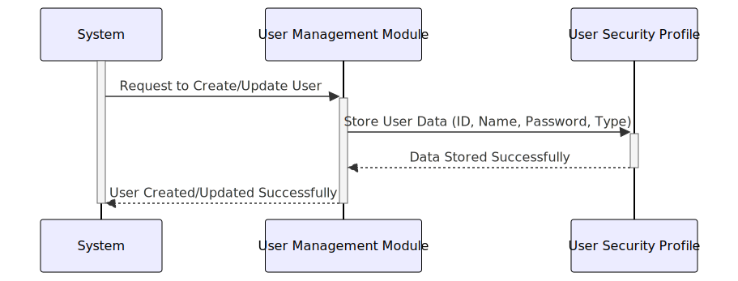

Gerado em: 1º de outubro de 2024
Título do Documento: Perfil de Segurança do Usuário - Especificação da Estrutura de Dados
Descrição Resumida:
Este documento descreve a estrutura para armazenar as informações do usuário de forma segura no aplicativo CardDemo. Esta estrutura define como os dados do usuário, como ID, nome, senha e nível de acesso, são organizados e armazenados.
Histórias do Usuário:
Como administrador do sistema, preciso de uma maneira segura de armazenar as informações do usuário, incluindo suas credenciais de login e direitos de acesso, para garantir que apenas indivíduos autorizados possam acessar dados e funcionalidades confidenciais.
Épico Relacionado:
6 - Gestão de Usuários e Segurança
Requisitos Funcionais:
- O sistema deve armazenar um ID exclusivo para cada usuário.
- O sistema deve armazenar o nome e o sobrenome do usuário.
- O sistema deve armazenar uma senha para cada usuário.
- O sistema deve armazenar um código indicando o tipo ou nível de acesso do usuário.
- O sistema deve incluir espaço para potencial expansão futura dos dados do usuário.
Requisitos Não Funcionais:
- Segurança: As senhas dos usuários devem ser armazenadas com segurança para evitar acesso não autorizado. Isso pode envolver técnicas de criptografia ou hashing, que não são detalhadas nesta estrutura de dados específica.
- Desempenho: A recuperação de informações do usuário deve ser eficiente para garantir o desempenho ideal do sistema.
- Integridade de Dados: O sistema deve aplicar regras de validação de dados para manter a precisão e consistência dos dados do usuário.
Critérios de Aceitação:
- O sistema pode armazenar e recuperar com sucesso todos os campos de dados do usuário definidos.
- As senhas dos usuários são tratadas como confidenciais e não são exibidas em texto simples.
- O sistema pode diferenciar usuários com base em seu tipo e controlar o acesso às funcionalidades de acordo.
Melhorias de Código:
- Segurança de Senha: Implemente um algoritmo robusto de hash de senha para proteger as credenciais do usuário contra acesso não autorizado.
- Validação de Dados: Adicione verificações de validação de entrada para garantir que os dados inseridos para cada campo atendam ao formato e comprimento necessários.
- Documentação: Forneça comentários claros no código para explicar a finalidade de cada campo e quaisquer considerações de segurança.
Melhorias de Segurança:
- Criptografia: Considere criptografar dados confidenciais do usuário, especialmente senhas, tanto em trânsito quanto em repouso.
- Controle de Acesso: Implemente medidas rigorosas de controle de acesso para restringir quem pode visualizar, modificar ou excluir dados do usuário.
- Auditoria: Registre todas as ações relacionadas aos dados do usuário, como criação, modificação e tentativas de acesso, para fins de auditoria de segurança.
Diagrama Conceitual:

–Made by “Smart Engineering” (by Compass.UOL)–